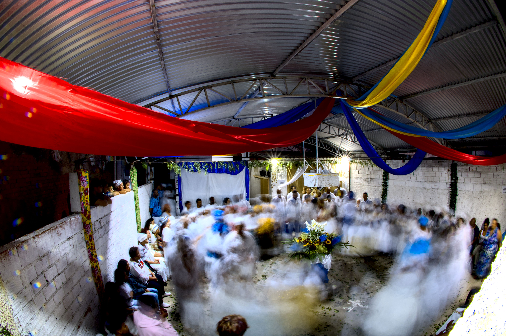
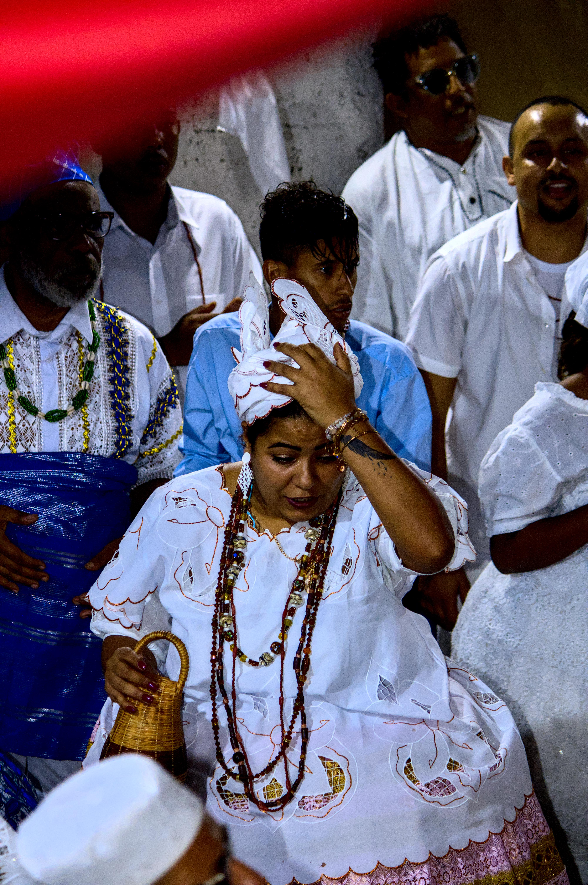
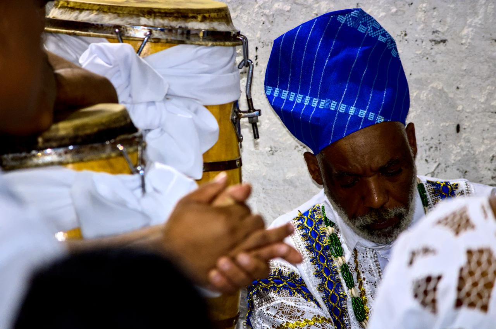
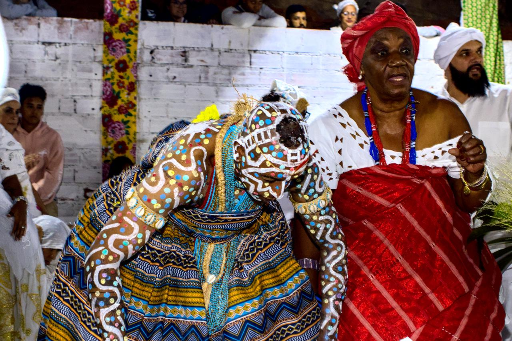
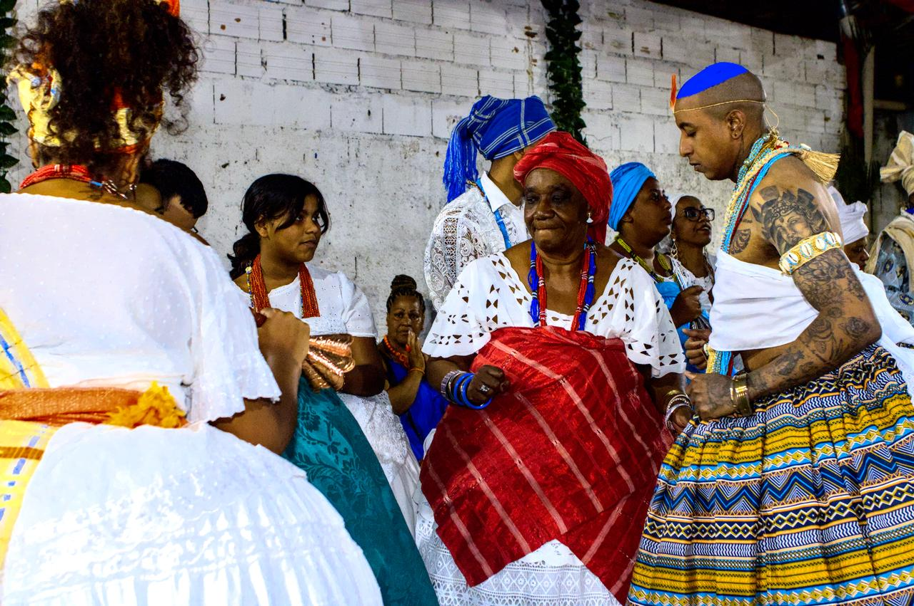
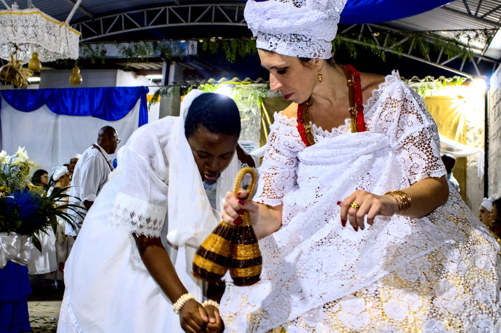
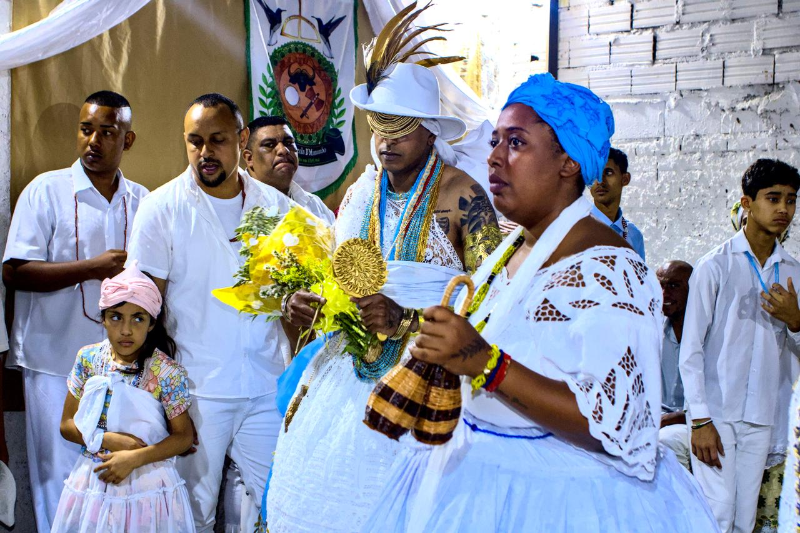
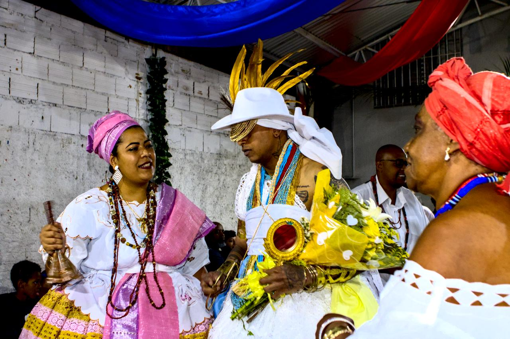
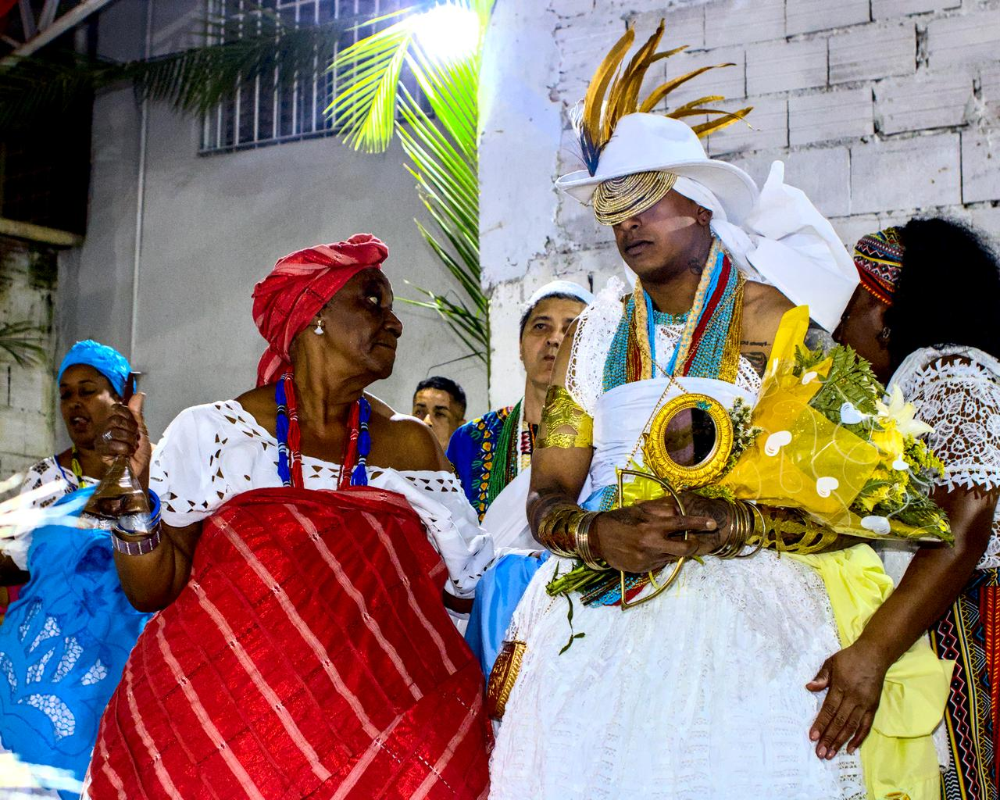

Logunedé

Menino deus, Logunedé, senhor das brincadeiras e das alegrias constantes
Menino deus das bênçãos da vida e da terra cintilante
Menino deus do abebé e do ifá que sua atenção caia sobre mim
Menino deus do ouro das pedras de arco-íris
Menino deus do arco e da flecha que aponta o destino
Menino deus da prosperidade
Menino rei da bondade
Menino deus guarda os meus passos
Menino deus me acolha em seus braços
Menino deus, senhor do mundo, senhor da esperança,
guie os meus passos, sob seu manto amarelo e verde.
Loci Loci Logum
Trabalho realizado em 1º de novembro de 2022, em Nzo Kizola d'Mutalambo, a convite de Rogério, quando de seu nascimento para o orixá Logunedé.













